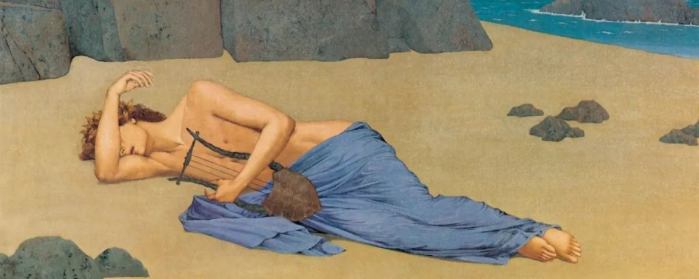

④ Dual coding
WD2_03.03.01 – situeren in tijd & ruimte

Love Will Tear Us Apart
naar Vergilius, Georgica IV, 504–510 · de rouw van Orpheus
① Voorkennis activeren
WD2_03.03.01 – situeren in tijd & ruimte
Context
Mythologische achtergrond
Eurydice is voor de tweede keer verloren. Orpheus staat aan de rand van de onderwereld, alleen. Dit fragment uit Vergilius' Georgica (ca. 29 v.Chr.) toont de nasleep: Orpheus weet niet wat hij nog kan doen. Vergilius stelt drie retorische vragen — over richting, tranen en goden — en antwoordt dan zelf: Eurydice vaart al weg op de Styx. De rest van de passage beschrijft zeven maanden van inconsolabele rouw: Orpheus zingt zijn verdriet uit aan de oevers van de Strumoon, terwijl zelfs wilde dieren en eiken luisteren.
④ Dual coding
WD2_03.03.01 – situeren in tijd & ruimte
⑥ Check begrip hele klas
⑦ Scaffolding
WD2_03.02.01 – tekst begrijpen
WD2_03.02.02 – betekenis geven
⑦ Scaffolding → zelfstandig
WD2_03.02.01.02 – talige hulpmiddelen
⑤ Actieve verwerking
⑦ Scaffolding
WD2_03.02.01.01 – lectuurmethode toepassen
WD2_03.02.01 – tekst begrijpen
Lectuuranalyse — vraag bij dit vers
③ Voorbeelden & modelling
⑤ Actieve verwerking
WD2_03.02.01.01 – lectuurmethode toepassen
WD2_03.01.01 – taalsystematiek
v. 504
Quid faceret?
Quo
se
rapta bis coniuge
ferret?
v. 505
Quo fletu
Manes,
quae numina
voce moveret?
v. 506
Illa quidem
Stygia
nabat
iam frigida
cumba.
v. 507
Septem illum totos
perhibent
ex ordine menses
v. 508
rupe sub aëria
deserti ad Strymonis undam
v. 509
flesse sibi
et gelidis haec evolvisse sub antris
v. 510
mulcentem tigres
et agentem carmine quercus.
504Quid faceret? Quo se rapta bis coniuge ferret?
505Quo fletu Manes, quae numina voce moveret?
506Illa quidem Stygia nabat iam frigida cumba.
507Septem illum totos perhibent ex ordine menses
508rupe sub aëria deserti ad Strymonis undam
509flesse sibi et gelidis haec evolvisse sub antris
510mulcentem tigres et agentem carmine quercus.
⑦ Scaffolding
⑪ Feedback die denken aanzet
WD2_03.01.01 – taalsystematiek
Grammaticale noten
1Quid faceret? Quo … ferret? Quo fletu … moveret? — drie indirecte vragen in conjunctief imperfectum, alle drie zonder inleidend werkwoord. Vergilius laat de retorische vragen in de lucht hangen: er ís geen antwoord.
2rapta bis coniuge — ablativus absolutus: PPP van rapere + abl. van coniunx. Bis (tweemaal) verwijst naar beide verlieservaringen: de slangenbeet én het omkijken.
3Illa quidem … iam frigida — quidem als beknopt tegenstellend partikel: Orpheus vraagt zich af wat hij moet doen, maar Eurydice vaart al weg. Frigida als praedicatief attribuut: zij is al koud — de dood is al begonnen.
4Stygia … cumba — de boot van Charon op de Styx. Stygia als epitheton ornans: het bijvoeglijk naamwoord identificeert de boot onmiddellijk als de dodenboot.
5perhibent + ACI — perhibere (ze zeggen / men zegt) leidt een dubbele ACI in: illum … flesse en illum … evolvisse. Let op de infinitief perfectum: de handelingen zijn voltooid binnen de ACI-tijdslijn.
6flesse — samengetrokken vorm van flevisse (inf. perf. act. van flere). Poëtische syncope: twee syllaben worden één. Onderwerp van de ACI: illum (Orpheus).
7mulcentem tigres et agentem carmine quercus — twee participia praesens actief bij illum: Orpheus streelt tijgers en beweegt eiken door zijn gezang. De natuur luistert — een klassiek Orpheus-motief dat de muziek als kosmische kracht toont.
8rupe sub aëria deserti ad Strymonis undam — hyperbaton over een heel vers: rupe en sub aëria omhullen deserti ad Strymonis undam. De rots omsluit het verlaten landschap — de woordschikking spiegelt de geografische eenzaamheid.
① Voorkennis activeren
⑧ Gespreide oefening
WD2_03.01.01 – basisvocabularium
WD2_03.02.02 – betekenis geven aan teksten
Tekst 4 · Thema 3 · 4de jaar
Woordenlijst
Woordenlijst op volgorde van voorkomen. basis = basiswoordenschat.